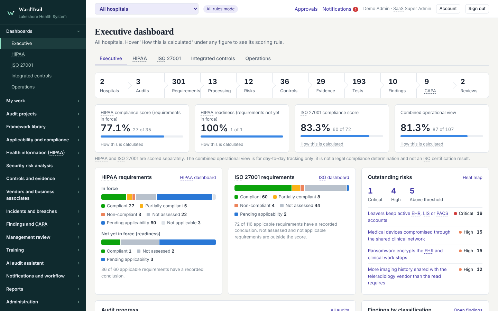
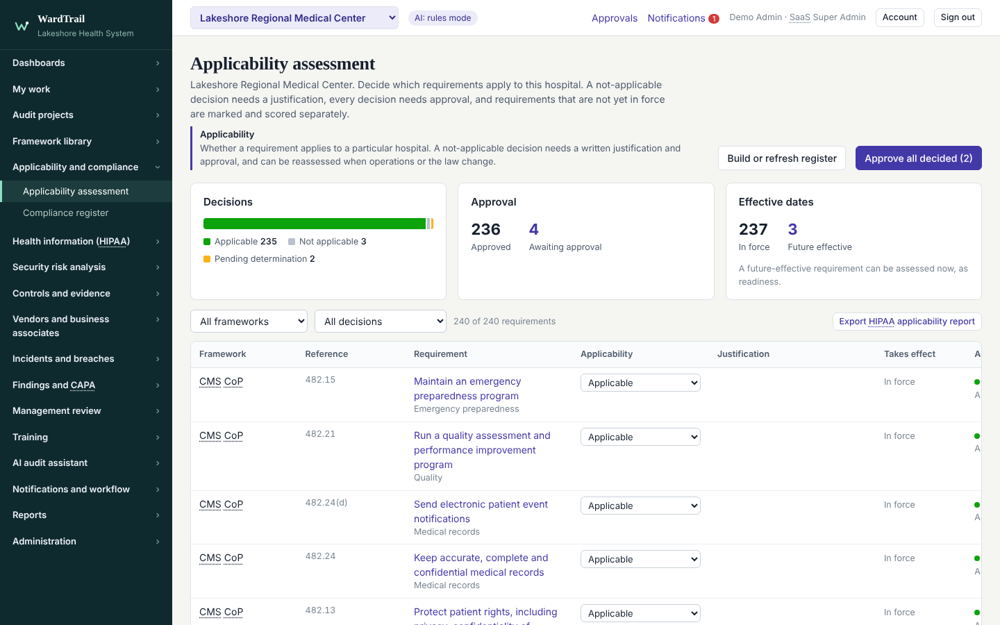
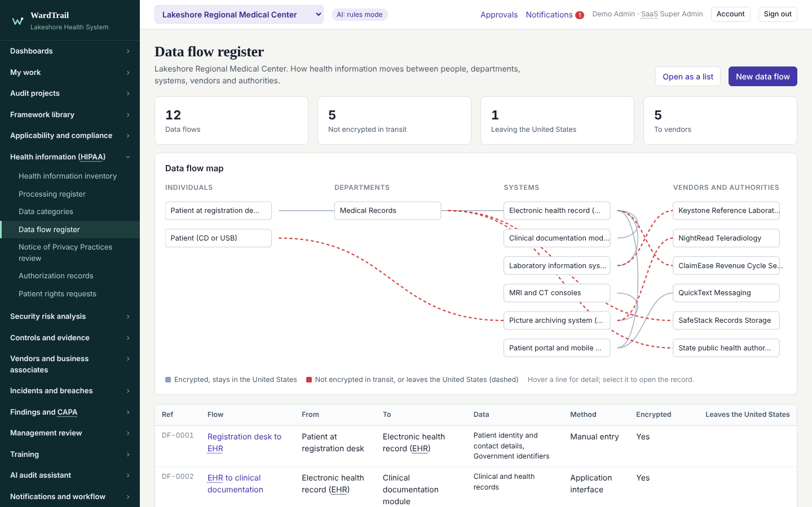
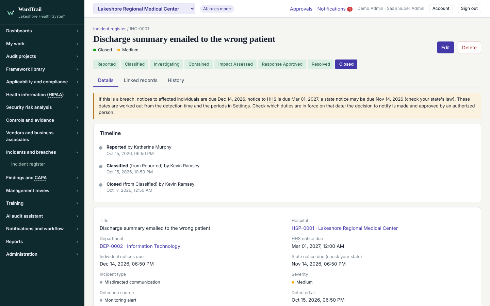
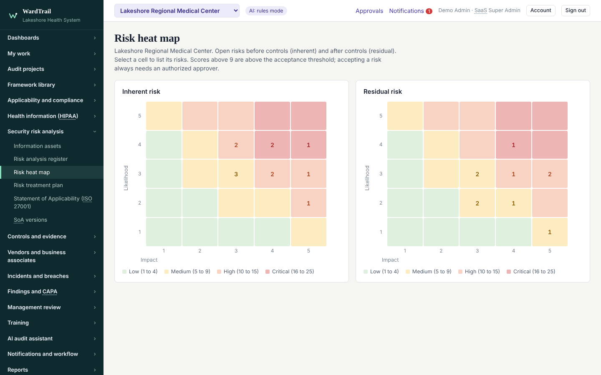
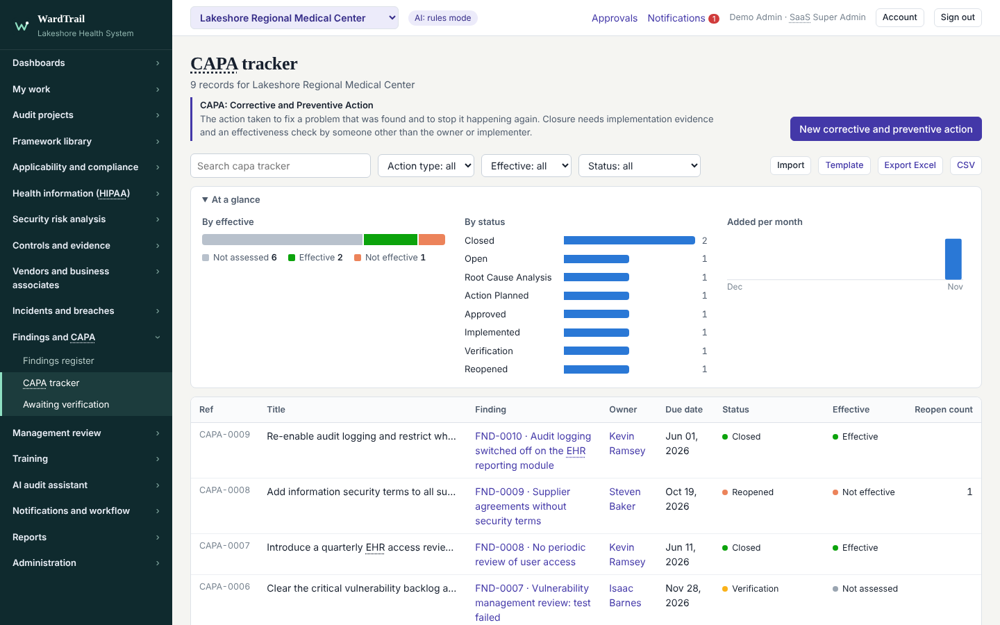
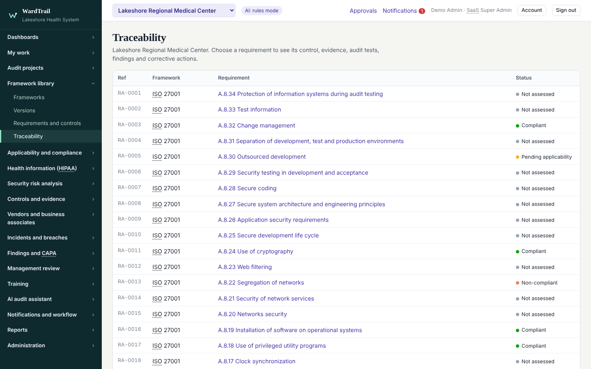
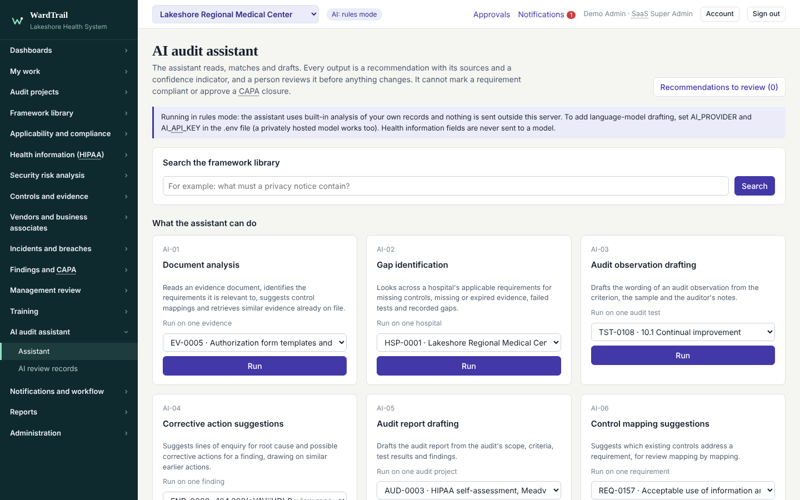

WardTrail, US Edition. It runs a hospital's HIPAA security risk analysis, breach clock and audits against the federal rules and security frameworks it answers to, with one control library and one evidence repository serving all of them.
The demo is the real interface running in your browser on fictional data. It is read-only and needs no sign-in.

HIPAA, the Medicare Conditions of Participation, the HHS cybersecurity goals and a cyber insurer's questionnaire ask many of the same questions: who can open a patient record, whether logs are reviewed, what the agreement with the imaging vendor says. WardTrail keeps one chain from the requirement to the fix, and lets one control and its evidence count for every requirement it meets.
Every screen below is in the live demo.
One row per requirement for each hospital. Marking a requirement not applicable demands a written justification, and every decision needs approval. Requirements that have been published but are not yet in force are flagged and assessed as readiness.

The data flow map is drawn from the register. Flows that are not encrypted in transit, or that leave the United States, stand out as dashed red lines. The health information inventory is built from the same records, so it never goes stale.

Every incident carries the four-factor risk assessment HIPAA asks for. Notice dates for patients and HHS are worked out from the discovery date and the number of people affected: 60 days, or after year end for breaches under 500. A person makes and approves the decision; the system never sends a notice.

Risks are scored on likelihood and impact, shown on inherent and residual heat maps. A low residual score never accepts a risk: acceptance is a recorded decision by an authorized approver who is not the risk owner.

A failed test raises a finding that keeps its link to the test, the criterion and the evidence. The corrective action moves through eight stages. Closure needs implementation evidence and an effectiveness check by someone other than the owner or implementer.

Pick any requirement and see its controls, evidence, audit tests, findings and corrective actions side by side. A dashed column shows where nothing has been recorded yet.

Draft, review, approve, publish. Published versions are frozen, and a completed audit stays linked to the version it was assessed against.
Versions, validity and retention dates, text extraction, an access log, and review by someone who did not submit it. Rejection needs a reason.
Generated checklists, samples that can be re-drawn from a recorded seed, and results that lock once the reviewer approves them.
Vendor assessments flag high-risk business associates. Incidents follow eight stages, with a four-factor breach risk assessment and a notification decision made and approved by a person.
From the applicability report to the management review report. Export to Excel, CSV or PDF.
One organization can hold many hospitals. A consultant sees only the hospitals assigned to them.
The figure on the dashboard follows one rule, shown on hover wherever it appears.
The HIPAA Privacy Rule changes issued on November 16, 2026, such as answering record requests in 15 days instead of 30, have a compliance date still to come. They are scored as readiness and kept out of the in-force score.
A requirement reaches "Compliant" only when an authorized person records it, after applicability is approved, with evidence that a reviewer has accepted and that is still valid.
Six assistants: document analysis, gap identification, observation drafting, corrective action suggestions, audit report drafting and control mapping.

Written for people who are not technical. WardTrail runs on one computer or server, and your data stays on it.
One of these on the computer: Docker Desktop (recommended, it includes the database) or Python 3.12 or 3.13 (good for trying it out). About 2 GB of memory and 2 GB of disk.
The first start takes a few minutes while it sets itself up. After that it starts in seconds.
Extract the WardTrail package you were given into a folder. The package is shared on request.
Use the start file for your computer, shown below. Your browser opens at http://localhost:8000.
Enter your organization name, your name, your email and a password of 10 or more characters with letters and numbers. You become the first administrator.
Leave the sample hospital group ticked to look around. When ready, remove the sample data, add your hospital and build the compliance register.
To stop: double-click stop-windows.bat.
To stop: run ./stop.sh in Terminal.
cd WardTrail
./start.shNo Docker? The same file uses Python and a built-in database file instead.
To stop: ./stop.sh. Your data is kept.
| Do this | Where |
|---|---|
| Take the ten-minute tour on the sample data | Dashboards, Applicability assessment, Data flow register, Statement of Applicability, CAPA tracker |
| Remove the sample data when you are ready | Administration, Settings, Remove sample data. The framework library stays. |
| Add your hospital, departments and people | Administration, Hospitals and Users |
| Have the framework library validated by a qualified person | Framework library |
| Build the compliance register and decide applicability | Applicability and compliance, Applicability assessment |
| Turn on two-step sign-in for everyone | Administration, Settings |
.env set WARDTRAIL_DOMAIN to your domain and WARDTRAIL_BIND=127.0.0.1. Change POSTGRES_PASSWORD before the first start.docker compose --profile https up -d --buildBack up with scripts/backup.sh and keep the copy off the server. Encrypt the server's disk: WardTrail does not encrypt stored files by itself.
| What you see | What to do |
|---|---|
| Nothing at localhost:8000 | The first start is still setting up. Wait a few minutes and refresh. |
| "Port 8000 is in use" | Open .env, change WARDTRAIL_PORT to another number such as 8010, and start again. |
| Docker is not running | Open Docker Desktop and wait until it says it is running, then start again. |
| Forgot the only administrator's password | On the server run python -m app.cli reset-password you@example.com |
| Built in | How |
|---|---|
| Sign-in | Passwords with lockout, two-step sign-in, and single sign-on with OpenID Connect |
| Separation of data | Each organization's records are kept apart; access narrows further by hospital, department and audit team |
| Audit trail | Every change, approval, export and AI decision, chained so tampering is detectable |
| Hospital systems | Read-only connectors by file, folder or REST address, and an API for the EHR, HRIS, ERP or SIEM to send records in |